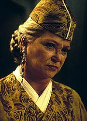
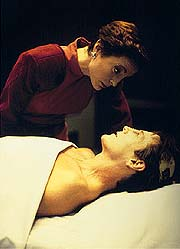
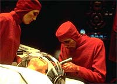
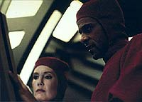
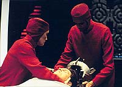

MANCHETE
DO EPISDIO
Como
uma boa premissa filosfica
pode virar uma m hora de televiso
Episdio
anterior | Prximo
episdio
Sinopse:
Data Estelar: 48498.4.
Jake marca um encontro com a jovem
Leanne e ter que desmarcar um compromisso anterior com Nog para
honr-lo. Logo em seguida atraca um transporte Bajoriano
acidentado em DS9. No transporte temos kai Winn, que sofreu muito
pouco, e vedek Bareil, em estado grave. Enquanto Bashir trata de
Bareil, Winn explica a Sisko que eles estavam indo se encontrar
com um representante Cardassiano (legado Turrel) para concluir as
negociaes de um tratado de paz entre Bajor e Cardssia, que
pode incluir reparos pelos tempos da ocupao e mesmo um perdo
oficial por parte do governo Cardassiano a Bajor.

Entretanto,
a lder religiosa Bajoriana diz que se Bareil morrer a esperana
de um tratado morre com ele, uma vez que as negociaes foram idia
dele e ningum conhece Turrel como ele. Infelizmente Bashir no
consegue salvar Bareil, que morre. Algum tempo depois, Bashir
descobre uma assinatura cerebral residual em Bareil e devido
particularidade da radiao a que o vedek foi exposto no
acidente, Bashir consegue traz-lo de volta vida e diz que ele
ficar curado com mais algumas semanas de extremo repouso. Winn
precisa dos conselhos de Bareil imediatamente, que comea a
ajudar do seu leito na enfermaria enquanto Winn conduz as negociaes
com Turrel pessoalmente, apesar dos protestos de Bashir.
Jake cancela seu encontro com Nog s para remarc-lo em seguida
como um encontro duplo, envolvendo ele, Nog, Leanne e uma colega
de Leanne, Riska. Obviamente o encontro um fracasso, Nog
insulta as duas garotas e ele e Jake ficam brigados. Porm Ben
Sisko defende Nog, alegando que seu comportamento foi
completamente em linha com a cultura Ferengi e sugere a seu filho
que no perca a amizade do sobrinho de Quark por causa do que
aconteceu. Bareil comea a apresentar problemas no previstos
inicialmente por Bashir.

O
mdico sugere que o religioso seja mantido em animao suspensa
at que a sua condio possa ser mais bem testada. Bareil
recusa, pois no vai adiar as discusses do tratado. Bashir ento
oferece uma droga experimental que pode torn-lo funcional por
alguns dias, mas que poder provocar danos severos em seus rgos
internos e mesmo em seu crebro. Bareil aceita e como esperado
seus rgos comeam a falhar em pouco tempo. Bashir diz que
pode substituir os rgos danificados com implantes artificiais,
mas avisa que se ele no for colocado em animao suspensa
imediatamente, ele continuar a acumular problemas. Bashir apela
para que Winn libere Bareil de sua obrigao para com ela, mas a
Kai recusa, pois no quer negociar o tratado sozinha (e deixar de
ter um bode expiatrio sua disposio).
Algum tempo depois, Bareil sofre uma falha macia na parte
esquerda do seu crebro. O dano irreversvel, mas Bashir pode
substituir parte do crebro dele com implantes, embora no
queira fazer isso. justamente Kira, dizendo que este seria o
desejo de Bareil, encerrar as negociaes a todo custo, que
convence Bashir a fazer o procedimento. Enquanto isso, Jake
consegue "mexer uns pauzinhos" com o comissrio Odo e
colocar tanto ele quanto Nog em uma cela de segurana com acusaes
fictcias. Finalmente eles conversam e resolvem os seus
problemas.
A operao bem sucedida, mas Bareil acorda como um "autmato"
e mal reconhece Kira, mas ainda reteve capacidade de ajudar Winn
no final das negociaes. Finalmente o tratado assinado e ento
o inevitvel acontece: o restante do crebro de Bareil comea a
falhar tambm. Kira pede a Bashir que faa novos implantes e
Bashir recusa, pois no quer transform-lo em uma mquina. Kira
finalmente aceita que o fim est prximo para o seu amor. A
major vela os ltimos momentos de Bareil, que morre em
definitivo.
Comentrios:

Observando
como este episdio chegou perto de ser mais um completo antiepisdio
e levando em conta o fato de que "Meridian"
e "Fascination"
ainda esto em recente memria, fica claro que esse foi um
momento particularmente difcil para a equipe de roteiristas da srie.
Com um tratado maluco (entre Bajor e Cardssia) que ningum sabe
de onde saiu, com a morte de Bareil que ningum sabe por que
morreu e uma perverso da caracterizao de Bashir, pouco se
salvou esta semana. Mais detalhes, sem precisar morrer no
processo, nas linhas abaixo.
Vamos comear discutindo essa baguna pela trama secundria
envolvendo Jake e Nog, que possui trs graves problemas. O
primeiro que ela parece um "refugo da primeira
temporada"(TM), no sentido de que a situao social
envolvendo os dois to comum que j deveria ter surgido,
produzido um conflito inicial e sido resolvida eras atrs, ou
seja, o cenrio da histria falho. O segundo (e bastante
grave) que Jake em nenhum momento diz que Nog deve considerar a
simetria da questo de diferenas culturais em jogo. Entretanto,
o pior problema o fato de a histria secundria e a principal
colidirem de uma forma que beira a pardia involuntria, devido
aos seus diferentes tons e o prprio modo em que as cenas foram
escritas. O mais triste que a histria principal precisa de
mais espao para ser mais bem desenvolvida. Equvoco em cima de
equvoco.
A idia da histria principal, aquela envolvendo Bareil,
bastante relevante: "O quanto podemos substituir de um ser
humano por implantes artificiais e ainda manter a sua
humanidade?" O problema aqui claramente a execuo do
conceito, na forma como a trama "entorta" elementos
conhecidos da srie e manufatura outros (com pouca ou nenhuma
justificativa) de forma a produzir "um doente terminal
familiar ao espectador"(TM), no caso Bareil, na enfermaria
(de Bashir) e ao menos duas opinies (no de paciente ou mdico)
sobre a sua condio (no caso as de Kira e Winn). A forma como
isso feito repleta de problemas.

Em
primeiro lugar, o tal "tratado de paz" entre Bajor e
Cardssia uma bobagem atroz. No somente por nunca ter sido
citado anteriormente, mas principalmente pelo episdio no
oferecer nenhuma razo concreta para os Cardassianos terem
interesse em sua assinatura (e mesmo interesse em honr-lo depois
de assinado). Mais grave ainda, ele no explica por que a sua
assinatura to crtica (e necessariamente to urgente) para
Bajor, a ponto de Bareil querer morrer por ela (e no poder se
curar completamente antes de retomar as negociaes). Tal
"falho alicerce" transforma todo o drama de Bareil em
mera manipulao do espectador. Bareil no morre "como um
heri defendendo uma causa", simplesmente por que tal causa
no existe. O pior que um potencial ponto central (o tal
tratado) para a srie introduzido sem grandes pensamentos,
apenas para fazer o episdio desta semana funcionar em seus
termos. Lastimvel, mas no pra por a.
Bashir tambm no saiu ileso do episdio. Um grande erro do
roteiro foi deixar Bareil morrer em primeiro lugar e ser trazido
de volta por "tecnobaboseira", o que j coloca a audincia
em estado de alerta. O fato de o doutor ter substitudo metade do
crebro de Bareil e de que poderia ao menos tentar substituir a
outra metade abre uma "caixa de vermes" extremamente incmoda.
Em termos ticos, Bashir sempre esteve coberto enquanto Bareil
teve sade mental para tomar as decises sobre o seu tratamento.
Ele tentou dissuadir Bareil de sua deciso e tambm convencer
Winn a deixar o vedek repousar, tudo correto at a. Quando
Bareil teve uma falha cerebral, a deciso final deveria residir
sobre o seu responsvel legal ou sobre um documento assinado por
Bareil expressando os seus desejos (documento que Bashir deveria
ter providenciado uma vez que ele sabia que a droga utilizada
fatalmente afetaria o crebro do vedek). Na falta disso, Bashir
deveria ter recusado fazer o procedimento, o que seria consistente
com o seu personagem. Ele acabou por transformar Bareil em um autmato
e quando o resto do crebro do Vedek falhou que ele se recusou
a continuar. No foi Bashir quem decidiu isto, foi o roteiro, que
pedia pela assinatura do tratado e pela posterior morte de Bareil.
A culpa de Bashir no final foi bem-vinda, mas j era tarde, o mal
j estava feito.

Definitivamente
Bareil no foi morto para termos Kira e Odo como um casal, como a
continuao da srie mostra claramente. A sua morte foi em
primeiro lugar uma maneira de consertar um roteiro problemtico e
em segundo lugar uma maneira de minimizar a bagagem Bajoriana na srie.
Por exemplo, na quarta temporada, Winn no aparece uma nica vez
e questes Bajorianas so tratadas de forma indireta, quando
surgem. Os dois motivos foram equivocados, especialmente se
levarmos em considerao o quo efetivo Bareil foi (tipicamente
fazendo um contraponto a Winn) em episdios como "In
the Hands of the Prophets", "The
Homecoming", "The
Circle", "The
Siege" e "The
Collaborator". Entre "Fascination"
e este episdio, Bareil foi literalmente massacrado (literalmente
at a morte) pelos produtores da srie.
Winn se mostra uma pssima negociadora, por isso ela precisava
desesperadamente de Bareil. O que vem a ser mais uma
"entortada de personagens"(TM) do roteiro, uma vez que
Winn sempre se mostrou uma hbil estrategista em todas as suas
participaes anteriores. Aqui ela mostrada excessivamente
insegura somente para "enfatizar a necessidade de Bareil
permanecer vivo" (o que no foi justificado em primeiro
lugar, por falar nisso).
Kira se saiu bem com a "primeira morte de Bareil",
aceitando a deciso de Bareil de ajudar Winn no importando as
conseqncias, reforando o desejo final dele e o vendo morrer.
Curioso como as ltimas falas de Kira descrevem bem Bareil. A
recusa de Kira em deixar Bareil partir teria um srio contraste
com as atitudes da personagem em "Chimera", da ltima
temporada.
Nana Visitor fica com o destaque segurando bem a gangorra
emocional de sua personagem no episdio. Ela foi tima na cena
de encerramento, a melhor do episdio (apesar de toda a falsidade
do que levou a aquele momento). El Fadil e Brooks foram bem e os
demais regulares no foram exigidos. A direo de Badiyi trouxe
pouco ao episdio, apesar de alguns ngulos interessantes
durante as cirurgias de Bashir.
Fletcher fez o seu slido trabalho, como de costume, ficando com
o destaque entre os convidados, enquanto um contido Anglim
funcionou bem. Eisenberg no foi muito feliz, ainda que no to
ruim quanto em (digamos) "The
Jem'Hadar". Os demais convidados caram na indiferena.
O fato de Bareil ter se tornado um consultor de Winn j havia
sido estabelecido em "Fascination"
e a eleio de Winn como kai se deu em "The
Collaborator".
Buracos de roteiro: a suspeita inicial de que o acidente havia
sido sabotagem esquecida, assim como o estratagema de Turrel
que parecia levar a uma manobra poltica para recuperar Terok Nor
(e que poderia justificar parcialmente o interesse de Cardssia
no tratado). Ns nunca temos uma clara noo do que est em
jogo dos dois lados da mesa de negociao tambm. O fato de as
negociaes serem feitas entre Winn (a lder religiosa
Bajoriana) e Turrel (um militar Cardassiano) parece bastante
errado tambm (em mais uma clara simplificao do roteiro --o
mais triste que se isso fosse justificado em tela poderia ficar
ainda pior).
Seria uma alternativa interessante se o "Bareil autmato"(TM)
no pudesse ajudar Winn tambm. Isso provavelmente levaria no-assinatura
do tratado e ida de Bareil para alguma ordem religiosa
reclusiva (por exemplo). Definitivamente no era o caminho que
Moore queria trilhar com seu roteiro.
"Life Support" um pssimo episdio de DS9
e que no se contenta em ser pssimo apenas em si. Traz um
absurdo tratado Bajoriano-Cardassiano para a mesa e a remoo do
vedek Bareil da lista de personagens recorrentes da srie, mudanas
que tem que ser tratadas (na medida do possvel) em episdios
vindouros. Temos aqui claras mostras de problemas no
direcionamento de Deep Space Nine, enquanto srie.
Citaes
Kira - "Although I'm
afraid I might have an unfair advantage."
("Embora eu tema ter uma vantagem injusta.")
Bareil - "You mean, playing against a dead man?"
("Quer dizer, jogar contra um homem morto?")
Bareil - "I'm beginning to dislike seeing that look on
your face, doctor."
("Estou comeando a desgostar de ver essa expresso em seu
rosto, doutor.")
Bashir - "If I remove his brain and replace it with a
machine, he might look like Bareil, he might even talk like
Bareil, but he won't be Bareil. The spark of life would be gone.
He'd be dead. And I will have killed him."
("Se eu tirar o crebro dele e substitu-lo por uma mquina,
ele pode se parecer com Bareil, pode at falar como Bareil, mas no
ser Bareil. A fasca da vida teria se perdido. Ele estaria
morto. E eu o teria matado.")
Jake - "Great. So we both disgust each other."
("timo. Ambos enojamos um ao outro.")
Trivia:
 Ron Moore culpado por vrias mortes no universo de Jornada:
K'Ehleyr, Kirk, Bareil (nesta semana), Kor e Gowron. A idia de
"Life Support" comeou com uma histria de Ford e
Soffer sobre "Bashir como Frankenstein", em que um
embaixador da Federao viria estao para tratar da paz
com os Romulanos e sofreria um acidente e morreria. Devido
importncia do encontro diplomtico, Bashir acabaria arrumando
uma maneira de trazer o embaixador de volta vida, com a utilizao
de uma tecnologia que acabaria levando o embaixador loucura,
tornando-se um monstro que Bashir teria que deixar morrer. Durante
as reunies da equipe de roteiristas tal embaixador (agora
Bajoriano) acabou virando Bareil e os Romulanos, os Cardassianos.
A histria se tornou "uma de DS9", segundo os
produtores.
Ron Moore culpado por vrias mortes no universo de Jornada:
K'Ehleyr, Kirk, Bareil (nesta semana), Kor e Gowron. A idia de
"Life Support" comeou com uma histria de Ford e
Soffer sobre "Bashir como Frankenstein", em que um
embaixador da Federao viria estao para tratar da paz
com os Romulanos e sofreria um acidente e morreria. Devido
importncia do encontro diplomtico, Bashir acabaria arrumando
uma maneira de trazer o embaixador de volta vida, com a utilizao
de uma tecnologia que acabaria levando o embaixador loucura,
tornando-se um monstro que Bashir teria que deixar morrer. Durante
as reunies da equipe de roteiristas tal embaixador (agora
Bajoriano) acabou virando Bareil e os Romulanos, os Cardassianos.
A histria se tornou "uma de DS9", segundo os
produtores.
Sobre a morte de Bareil, esta foi uma deciso que levou algum
tempo para ser tomada (devido aos crescentes rumores da sada de
Colm Meaney na poca, os roteiristas comearam a brincar que
iriam matar o chefe O'Brien, o que nunca foi a inteno deles).
Moore sugeriu Bareil, no houve maiores recusas porque os
produtores no estavam gostando dos rumos do relacionamento entre
Kira e Bareil e estavam sem idias futuras tanto para tal
relacionamento quanto para o prprio personagem. De fato eles nem
achavam que Bareil era um personagem popular. Da a sua morte foi
decidida, a histria original modificada e o roteiro escrito.
Entretanto, para surpresa dos produtores, aps o episdio eles
comearam a receber cartas de uma organizao chamada de
"Friends Of Vedek Bareil", protestando quanto morte
do personagem. Tais cartas continham fotos de verdadeiros velrios
de Bareil feitos em sua homenagem, por tal grupo de fs.
"Coisa pesada e furiosa", segundo Ren Echevarria. O
grupo "Friends Of Vedek Bareil" foi um dos poucos
movimentos de fs reconhecidos durante a produo da srie.
Bareil acabou "retornando" a srie, na realidade a verso
do "Universo do Espelho" do personagem em "Resurrection",
da sexta temporada (outro pssimo episdio, por sinal).
Louise Fletcher retornou com a sua Kai Winn e uma pesada gripe
(que no aparece em cena devido ao grande profissionalismo da
atriz). Ela lembra com carinho da fala em que a personagem
literalmente pede que Bashir d um "transplante de crebro"
a Bareil. A sua fala favorita na srie.
Uma nota curiosa vem do fato de que os aparelhos projetados para
serem usados pelo doutor Bashir tiveram o seu propsito trocado
em cena. Aquele que era para ser usado para operar foi usado para
examinar e vice-versa.
Ficha
tcnica:
Histria de Christian Ford
& Roger Soffer
Roteiro de Ronald D. Moore
Direo de Reza Badiyi
Exibido em 30/01/1995
Produo: 059
Elenco:
Avery Brooks como
Benjamin Lafayette Sisko
Ren Auberjonois como Odo
Nana Visitor como Kira Nerys
Colm Meaney como Miles Edward O'Brien
Siddig El Fadil como Julian Subatoi Bashir
Armin Shimerman como Quark
Terry Farrell como Jadzia Dax
Cirroc Lofton como Jake Sisko
Elenco convidado:
Philip Anglim como vedek Bareil
Antos
Aron Eisenberg como Nog
Lark Voorhies como Leanna
Ann Gillespie como enfermeira Jabara
Andrew Prine como legado Turrel
Louise Fletcher como Kai Winn Adami
Eva Loseth como Riska
Kevin Carr como um Bajoriano